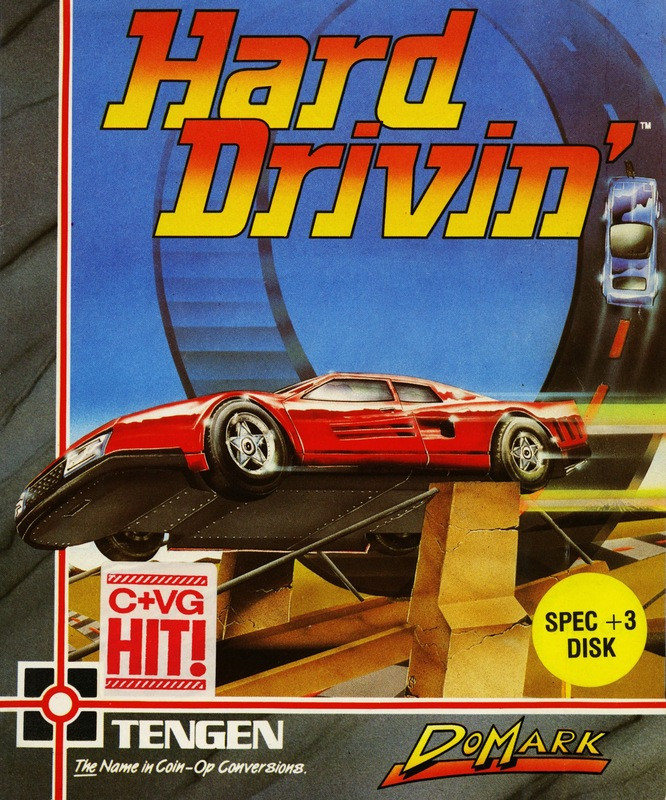
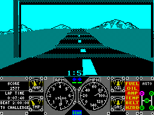

Hard Drivin'


{kind=link}

| Publisher: | Tengen |
| Price: | £9.99 Cass, £14.99 Disk |
| Year: | 1989 |
| Source: | CRASH, Issue 72 |

The original arcade version of Domark’s Formula 1 entry into the Chrimble scramble isn’t so much a racing game as a racing simulator: an impressive beast, mainly because of the clutch/gear set up that allows you to drive it like a real car. Obviously the Speccy isn’t built like a car, but you do have the option to pick either manual or automatic gear mode just by moving the steering wheel left or right to choose. Two tracks await you: Stunt and Speed. As the name suggests, the speed track demands warp speed driving. But the Stunt track is probably the most graphically impressive of the two, because apart from driving like a maniac you must negotiate three types of obstacle.

These are the Bridge Jump, the Loop the Loop and if your stomach is still in its proper place the Bend’s sheer slope has to be tackled. Watch out on both tracks for the speed signs: drive any faster or slower than they advise and you’ll be witness to the spectacular action replay of your car rocketing off the track and exploding in a sheet of flames. The first lap (whichever way you go) is against the clock, and if you beat the lap time you enter the second phase of the game.
This is a straight one lap race around the Stunt track against the Phantom Photon (a computer controlled car), and you need to get a move on cause this guy doesn’t hang around. If you manage to survive the course (crashing means instant disqualification) and beat the Phantom your score is entered on the high score table, and your driving pattern is taken up by the Phantom next time you race him.
The arcade version was fast, and on the Speccy we couldn’t believe our eyes — this game moves at warp factor seven. The graphics are all beautifully drawn and shaded. The controls take a bit of getting used to: I found myself spinning off the track (with accompanying action replay) so often, I considered applying for a pilot’s licence. Luckily this is a computer game, and not the real thing, so you get endless goes with no damage — and endless attempts at Hard Drivin’ you’ll definitely want!
MARK — 92%
Oh wow. This is simply amazing. I first played the arcade machine at the 1989 PC Show, and with its proper car controls (clutch, brake, accelerator and gears) it was the best driving simulation I had ever seen. Now it’s come to the Spectrum (or SAM if you have a prosperous Christmas!). Everyone must have dreamed of sitting in the little toy cars when you used to push them around tracks as a child. I know I did, and now I can live out my fantasy with Hard Drivin’.
The 3-D graphics are out of this world. Made up of monochrome shading and detailed backdrops, they zip around the screen so fast. The choice of two styles of game is a good idea, You can zoom at speeds up to 140mph on the speed track, or perform loop the loops and jump ramps on the stunt track — brilliant. Just to add an extra boost of addictiveness there’s the replay sequence that shows an aerial view of you (and all your mistakes). This is an instant hit with me and will keep me hooked for ages. Get a copy of Hard Drivin’ — the ultimate driving experience.
NICK — 92%
RATING
An excellent conversion, fast ’n’ thrilling and something very different from the rest
| Presentation: | 90% |
| Graphics: | 91% |
| Sound: | 86% |
| Playability: | 89% |
| Addictivity: | 90% |
| Overall: | 92% |